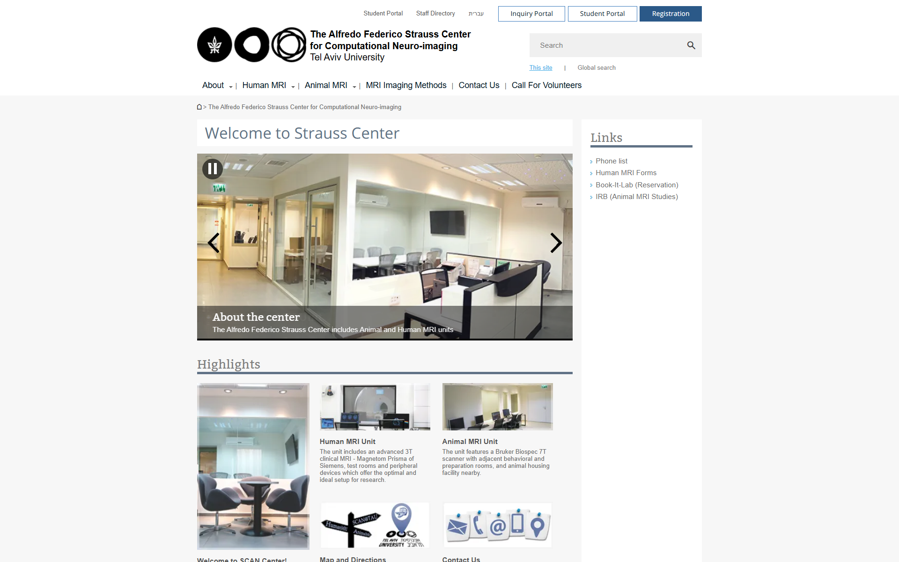
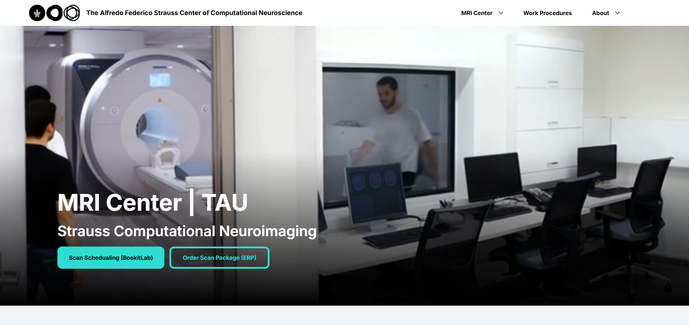
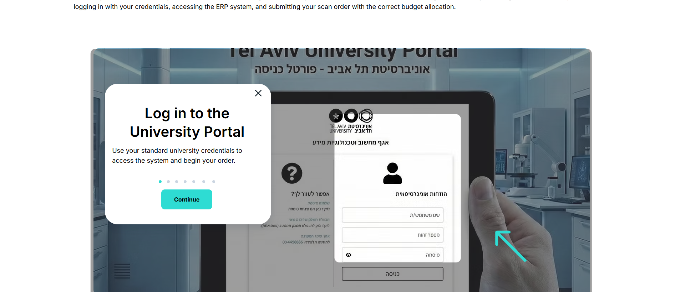
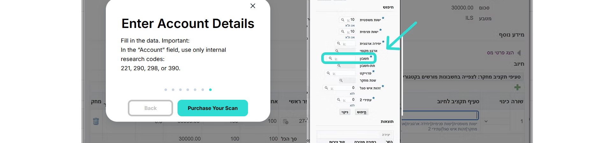
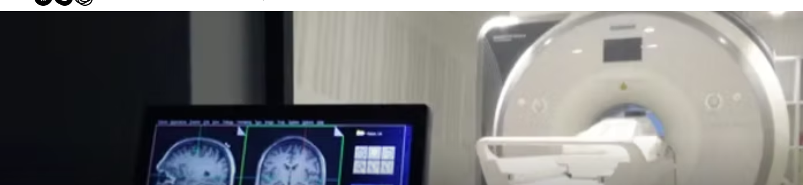
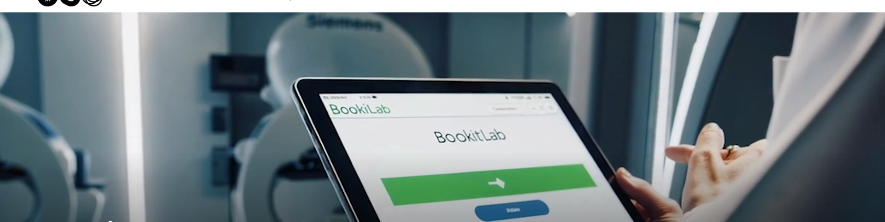
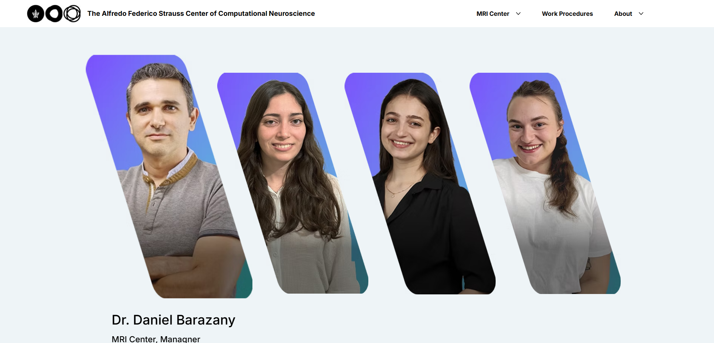
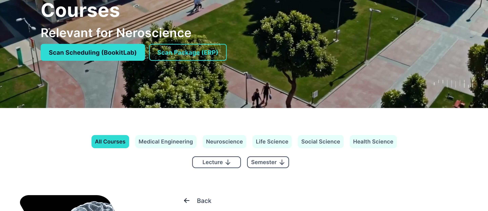
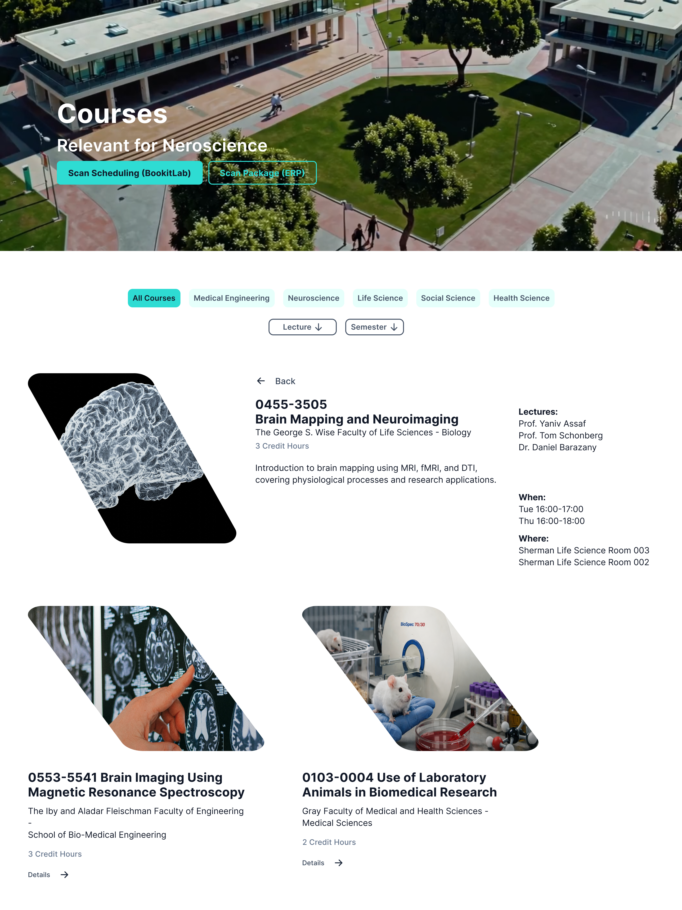

From a 2013 Relic to a Live Research Platform
The old site dated back to 2013: a generic university template, one image per page, text-heavy and largely irrelevant to visitors. People left within a second. I initiated the replacement myself and built it entirely solo - research, design, code, and media production.
The constraint: the university only provides Wix Studio. So I designed the system from scratch in Figma, then translated it onto the platform - this wasn't filling in a template, it was building one.
- Research & Spec: Defined the problem, the audience, and the information architecture from zero.
- Design: Full visual system built in Figma.
- Build: Implemented in Wix Studio, with custom JavaScript where the CMS wasn't enough.
- Media Production: AI-assisted photography and video for a space that couldn't be shot directly.
TAP TO ENLARGE


The Real Problem: A Director as Human Bottleneck
Even a brochure site had a real operational problem hiding inside it. The institute director had become a human bottleneck: at least 12 people regularly contacted him directly just to book scanner time through Book-It-Lab, and he explained the same steps over and over, every time.
Turning a Bottleneck into a 7-Step Onboarding
Instead of adding another explanatory page, I designed a 7-step popup onboarding - a guided walkthrough the user clicks through to complete the entire booking process. Everyone who used to email the director gets routed there instead.
Result, from the director himself: recurring inquiries dropped from 12 regulars to zero.
The system didn't answer instead of the director - it taught users to do it themselves.
TAP TO ENLARGE


Producing Media for a Room You Can't Photograph
An MRI suite is a magnetic environment - most of what needed showing (the scanner, the scans, the space itself) couldn't be shot directly. The solution was source-based media production: I gathered raw material from multiple sources - old site assets, brain scans, eye-tracking footage, university photography - and fed it into AI models to generate new imagery and video.
I chose AI-generated and AI-edited video - built from real MRI center footage in Gemini, Kling, and Sora, cut together in Premiere - because a camera inside the room during an active scan is a safety hazard, not just an access problem: any metal object is pulled straight into the magnet. The scanner's still photo is sourced from the manufacturer's own professional photography; I edited the background to fit the new site, since my own camera couldn't get a comparable shot of the room as it actually looks day to day.
TAP TO ENLARGE
Nothing shipped as raw output. I edited every asset, cleaned up the equipment spaces, and matched everything to the site's visual language.
Institute data, animated in After Effects. A physical constraint became a production pipeline: source → generate → edit - not an "AI image," a process.
Beyond Design: Building the System
I didn't just design the site - I built it. A CSS design system defines color, type scale, and button sizing consistently across every page.
- A styled button that grows sideways on hover.
- A team card that reveals role, responsibilities, and contact details on hover.
- A collapsible course menu that expands on click - CMS and code working together.
- A scroll-triggered animation system in Wix Studio, so every section animates in as you scroll.
The system scaled across full pages - MRI units, Book-It-Lab, a live CMS-backed course catalog - and down to a single homepage section, where the same design thinking shows up as a hover-reveal team grid rather than a static bio list.
Wix Studio gave the frame. The code gave it behavior.
TAP TO ENLARGE



Designing for Researchers, in English
Two audiences: existing researchers who need to book scanner time without getting stuck in the ERP process, and future researchers who need a reason to be interested in the institute at all. Onboarding serves the first; the visual experience serves the second.
I built the site in English by default. The real audience - researchers, biotech companies, international inquiries - works in English. Hebrew wasn't an actual need, just an institutional assumption. That call came from the user, not the template.
TAP TO ENLARGE
Solo, on a Constrained Platform
I designed without limits in Figma, then translated that system onto a platform the university mandated - some behavior needed real code because the CMS alone couldn't do it. And this was full solo: no team to consult, no developer handoff. Research, design, code, and media - all mine.
On my other case studies I was part of a team. Here, I was the entire team.
TAP TO ENLARGE


Three Takeaways
- Even a brochure site has a product. The real operational problem - the director as bottleneck - was hiding inside a project that was supposed to be a simple showcase. I still look for that pain point in projects that look flat on the surface.
- Constraints are material. A mandated platform and a room with no camera access both became design decisions, not excuses.
- A product decision is sometimes what you choose not to build. I dropped Hebrew because the actual user didn't need it - not everything that can be added should be.